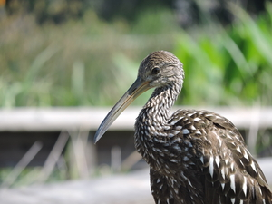

|
Mike Jury
|
 |
Address
Department of Mathematics
University of Florida
PO Box 118105
Gainesville FL 32611-8105
USA
Office Little Hall 484
Phone +1 352 294-2317
email mjury@ufl.edu
Google Scholar
|
About me
“Giving the public details about oneself is a bourgeois temptation I have always resisted.” — Gustave Flaubert
Professor of Mathematics, Associate Chair and Graduate Coordinator, University of Florida
Formerly Visiting Assistant Professor of Mathematics, Purdue University
The photo above is not me, it is a limpkin (Aramus guarauna), taken at Sweetwater Wetlands in Gainesville, Florida, May 2024.
Research interests
noncommutative function theory, operator theory, operator algebras, complex function theory, reproducing kernel Hilbert spaces
|